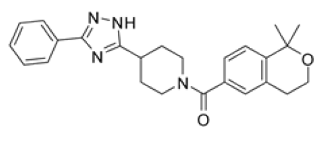

AI-enhanced adaptive virtual screening of large libraries for ligand discovery
Ligand 발굴을 위한 대규모 library의 AI 기반 적응형 virtual screening
Abstract · 전문 번역
Ultralarge virtual screening(ULVS)은 신약개발을 위해 수십억 개의 분자를 평가하지만, 비용·유연성·확장성 측면에서 한계가 있다. 우리는 ULVS의 접근성·확장성·효율성을 높이고 artificial intelligence(AI) 및 machine learning(ML) 방법의 개발을 지원하는 open-source 플랫폼인 AdaptiveFlow를 소개한다.
AdaptiveFlow는 screening에 바로 사용할 수 있도록 준비한 Enamine REAL Space를 제공한다. 이는 우리가 아는 한 docking 준비가 완료된 drug-like molecule로 구성된 최대 규모의 library로, 690억 개의 화합물을 포함하며 SELFIES format으로도 제공된다. Molecular property로 구성된 18-dimensional grid는 유망한 chemical subspace에 우선순위를 부여하고, 선택적으로 active learning을 적용하여 계산 비용을 여러 자릿수 규모(orders of magnitude)로 줄인다. AdaptiveFlow는 GPU-accelerated 및 ML-based 방법을 포함한 1,500개 이상의 docking protocol을 통합하며, Amazon Web Services cloud에서 최대 560만 개 CPU까지 거의 선형적인 확장성을 달성한다.
우리는 질환과 관련된 두 target인 ferroptosis suppressor protein 1(FSP1)과 poly(ADP-ribose) polymerase 1의 nanomolar inhibitor를 발굴했다. Co-crystal structure는 FSP1 억제 기전에 대한 통찰을 제공했다. AdaptiveFlow는 전례 없는 규모의 신약개발을 가능하게 하고 AI 기반 방법의 개발을 지원한다.
초록 전체 번역 · 가독성을 위해 문단만 구분 · p.1 · 원문 보기 ↗
연구 목적
대규모 library에서 유망한 chemical space를 먼저 선택하면, 계산 부담을 줄이면서 실험 hit를 확보할 수 있는가?
방법 → 결과
- Screening
- Property별 tranche의 대표 ligand를 docking하고 유망한 구역을 집중 탐색 → 10개 target에서 random 100만 회 대비 ATG 10만 회로 비슷하거나 개선된 상위 docking score 확보.
- FSP1
- 합성 후보 33개를 thermal shift·enzyme assay로 평가 → 2개 hit. CETSA에서 cellular engagement, co-crystal에서 coenzyme Q site 결합 확인.
- PARP1
- 합성 후보 160개를 enzyme assay로 평가 → 7개 inhibitor. iParp1은 IC₅₀ 8.8 nM였으나 hydrolysis·permeability 문제가 보고됨.

Thermal shift·enzyme assay 이후 CETSA·co-crystal로 검증.Table 1 구조식 발췌 · 클릭하여 확대
Kᵢ: ancestral FSP1 assay
© Authors 2026 · CC BY-NC-ND 4.0
Library 규모뿐 아니라 어디에 docking 계산을 집중할지 결정하는 전략을 제시한다.
내 target의 subset에서 동일한 계산 budget으로 random selection과 ATG의 known-actives recovery를 비교해 볼 수 있다.